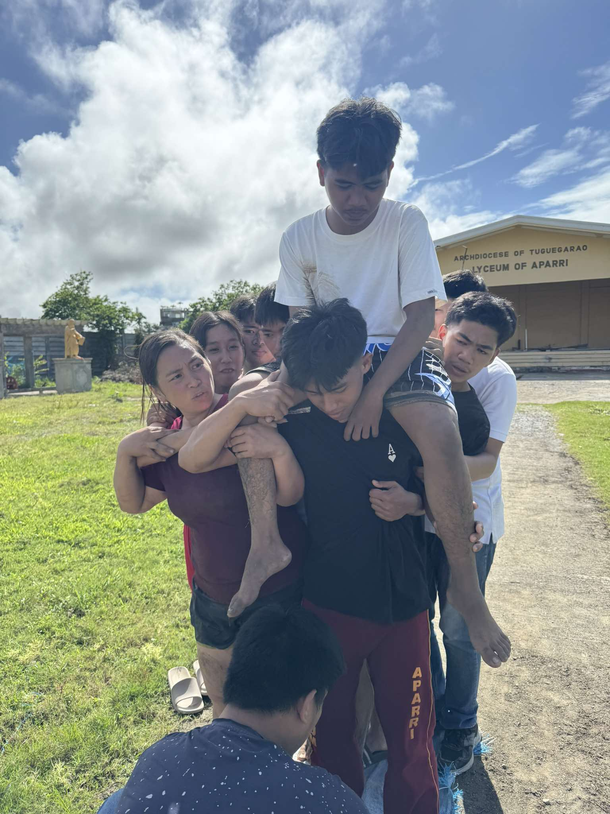
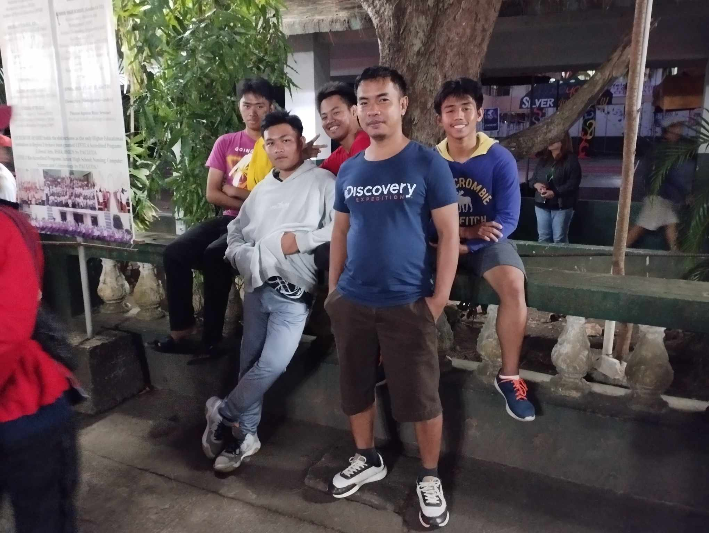
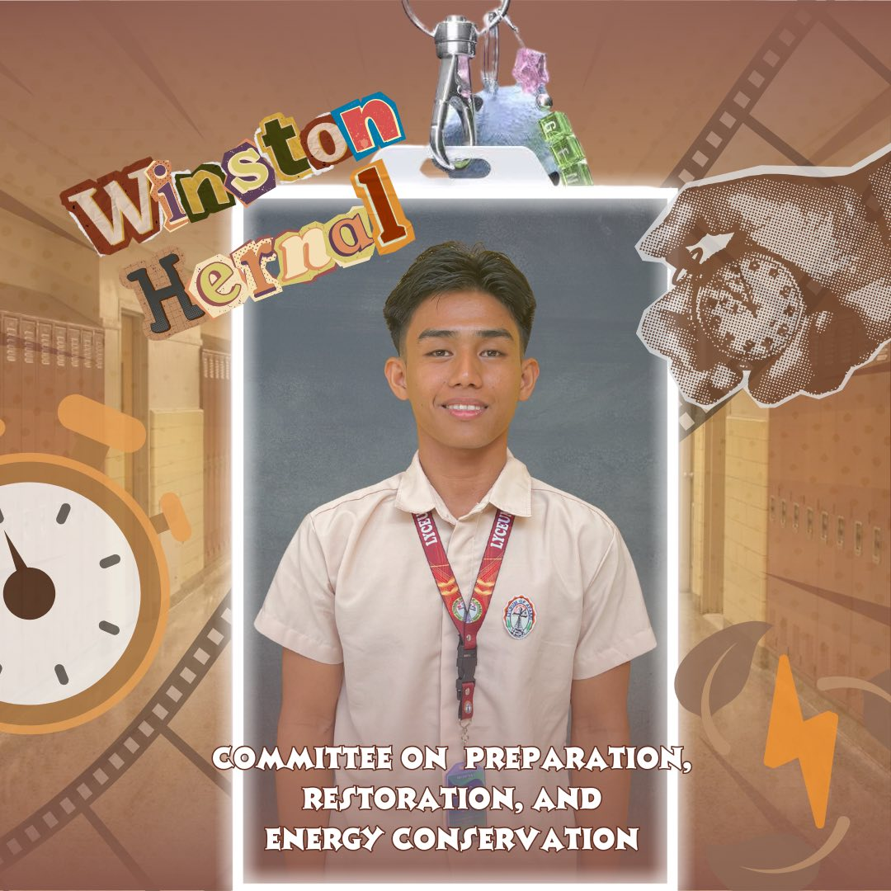

Academic & Leadership Timeline
My journey through the years, marked by academic excellence and active leadership in various roles

Dean's Lister
Maintained excellent academic standing with a GPA of 90% during my first and second year in BS Information Technology.
Balanced academics with participation in various campus activities and tech competitions, demonstrating time management and dedication.

Second Year Representative
Served as the official representative of CICS Department, voicing student concerns and organizing department events.
Facilitated communication between students and faculty, improving classroom policies and student welfare programs.

Sports Coordinator
Organized inter-department sports competitions with over 40+ CICS participants.
Managed budgets, schedules, and team coordination for basketball, volleyball, and e-sports tournaments.

CSO Officer & Technical Assistant
Currently serving as Computer Society Organization officer, responsible for tech-related student activities and workshops.
Assisting Sir Jenel in troubleshooting and repairing system units in our computer laboratories, applying hands-on technical skills daily.